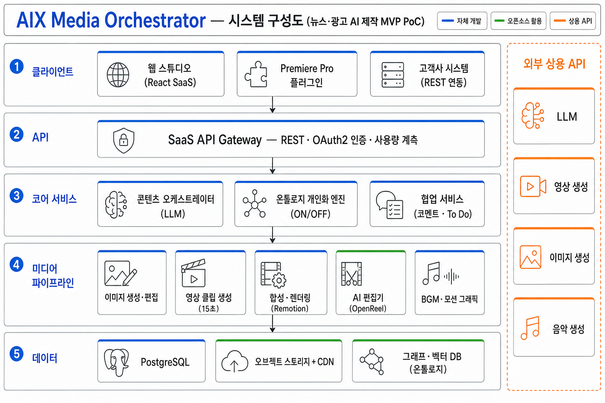

AIX Media Orchestrator — 시스템 구성도 · 뉴스·광고 제작 MVP (PoC)
분류 — System Architecture (시스템 구성도) · SaaS API 제공 · 결제 제외 · 오픈소스 + 상용 API 혼용 · 2026.06

산출물
— Presales 가능한 SaaS API 형태 MVP (결제 제외)
기간
— 5개월
핵심 차별화
— 온톨로지 기반 개인화 ON/OFF · 오픈소스+상용 혼용 최적 구성